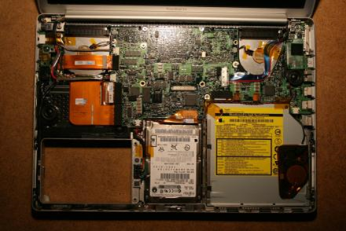

Laptop Displays- <<
Previous Next >> PCH18-Laptop and Notebook Component Replacement
Device Replacement-
Unlike desktop computers, laptops tend to use proprietary parts, because each manufacturer makes the internal layout and design of their laptop to meet their own design specifications. For this reason, you cannot simply replace a display or keyboard on one laptop with parts from a different model laptop. System boards, network cards, touch pads, and other devices all must be purchased from the original manufacturer, because an aftermarket component won’t necessarily fit in your model. Luckily, a few parts are still standard across all laptops, including hard drives, some ODD (CD/DVD), memory, and CPUs. Note, though, that it is often cheaper to replace a laptop than it is to replace the laptop’s parts. For example, if you have a two-year-old laptop and the display gets cracked, it may be more cost effective to simply buy a newer laptop than to replace the display, because the display may cost several hundred dollars to replace.
Laptops have two different power sources: power from the wall via the AC adapter and power from the battery. The battery is often replaceable or upgradable by the end user, and can be purchased through numerous third-party websites. The same holds true of the AC adapter. You must be careful to ensure that the wattage and voltage output match as some third-party devices are made with inferior quality, and a mismatch can actually damage your laptop.

Inside a laptop. Photo used under CC-BY-SA license from Niels Heidenreich.
did I get this-
True or False: Notebook computer cases tend to be similar to one another, and components in notebook systems tend to be interchangeable among manufacturers.
(T:Incorrect. Laptops and notebooks tend to use proprietary parts, because each manufacturer makes the internal layout and design of their devices to meet their own design specifications.
F:Correct. Laptops and notebooks tend to use proprietary parts, because each manufacturer makes the internal layout and design of their devices to meet their own design specifications.)
設備更換-
與台式計算機不同，筆記本電腦傾向於使用專有零件，因為每個製造商都會對其筆記本電腦進行內部佈局和
設計，以符合自己的設計規範。因此，您不能簡單地用其他型號筆記本電腦中的部件替換一台筆記本電腦上
的顯示器或鍵盤。系統板，網卡，觸摸板和其他設備都必須從原始製造商處購買，因為售後組件不一定適合
您的型號。幸運的是，所有筆記本電腦中仍然有一些部件是標準部件，包括硬盤驅動器，某些ODD
（CD / DVD），內存和CPU。不過請注意，更換筆記本電腦通常比更換筆記本電腦的零件便宜。例如，如果
您有一台使用了兩年的筆記本電腦，並且顯示屏破裂了，那麼簡單地購買一台較新的筆記本電腦要比更換顯
示屏更具成本效益，因為更換顯示屏可能要花費數百美元。
筆記本電腦有兩種不同的電源：通過交流適配器從牆上供電和從電池供電。電池通常可由最終用戶更換或升
級，並且可以通過眾多第三方網站購買。 AC適配器也是如此。您必須小心確保功率和電壓輸出匹配，因為
某些第三方設備的製造質量較差，並且不匹配實際上會損壞您的筆記本電腦。
在筆記本電腦裡。 Niels Heidenreich根據CC-BY-SA許可使用的照片。
我得到這個了嗎-
是非題：筆記本電腦的機箱往往彼此相似，並且筆記本電腦系統中的組件在製造商之間往往可以互換。
正確
錯誤
(正確:不正確。筆記本電腦和筆記本電腦傾向於使用專有部件，因為每個製造商都會對其設備進行內部佈局和設計，以使其符合自己的設計規範。
錯誤:正確。筆記本電腦和筆記本電腦傾向於使用專有部件，因為每個製造商都會對其設備進行內部佈局和設計，以使其符合自己的設計規範。)
Laptop Displays- <<
Previous Next >> PCH18-Laptop and Notebook Component Replacement